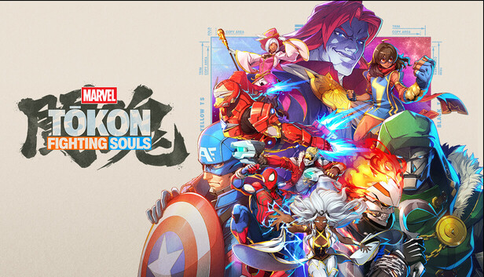
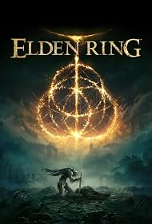
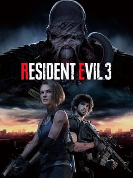
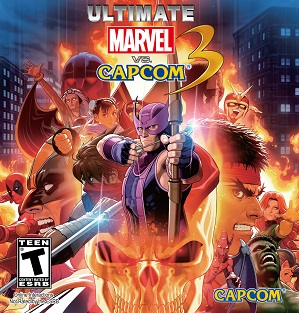
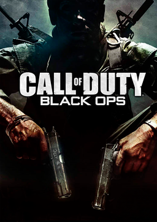
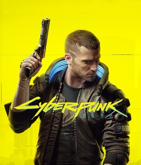
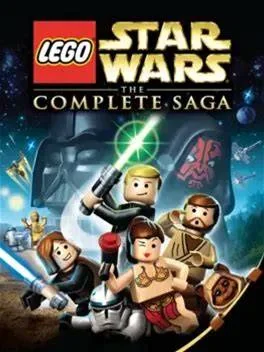
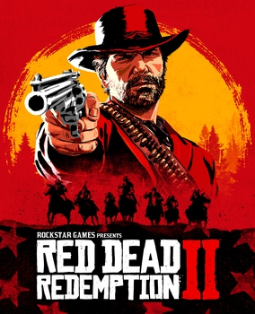
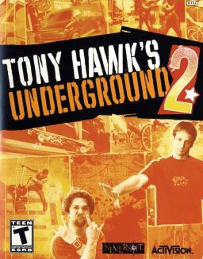
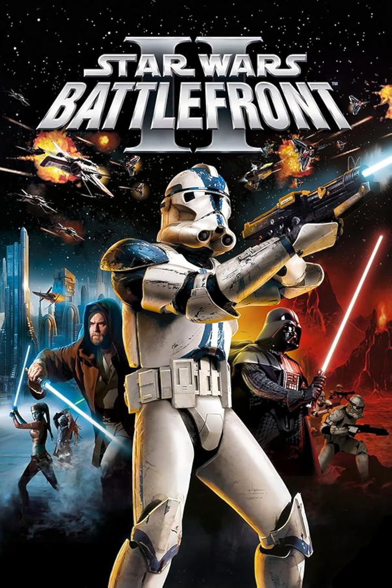

Marvel Tokon: Fighting Souls
My new main fighting game
Love the game and think it has so much much potential for the future of its lifespan.
A closer look
Each game brings something different to the table. Here are a few details that make each one worth returning to.

My new main fighting game
Love the game and think it has so much much potential for the future of its lifespan.

The game that got me into soulslike games
A masterpiece of world-building and aesthetic design, there is too much to say about how amazing this game is.

My intro in to the Resident Evil series
Though its not the most hyped game of the series, it holds a close place to me as its what got me to finally play the series, and yes I've played the classics.

A classic fighting game essential for any fan
Each character has unique moves and special abilities that encourage experimentation. The game's competitive scene is vibrant, with regular updates keeping the meta fresh.

One of the greatest of all time
The game that started it all for me, one of the essential fps shooters and stories to play. Can't forget Zombies!

A bold world of neon and possibility
Another one of those worlds that caputres so much from the aesthetic, world, and characters that stick with you throughout the experience.

A funny and nostalgic space adventure
Along with Tony Hawk and Battlefront 2 this is the earliest game I have vivid memories of playing, the nostalgia and charm of the game are unmatched.

A world built for getting lost in
The masterpiece presequel to the original Red Dead Redemption, another massive game with a a gut wrenching story.

Skateboarding with absolute mayhem!
This was one of the very first games I have vivid memories of playing on xbox, and its still the best skating games overall.

The ultimate Star Wars battle sandbox
Like Tony Hawk Underground 2, this was one of the very first games I ever played and remains one of the games in the Star Wars franchise.